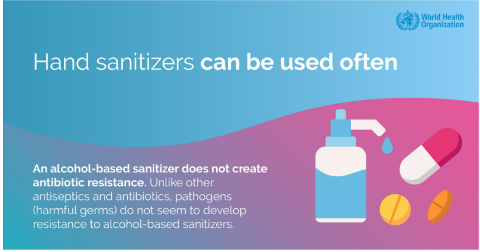
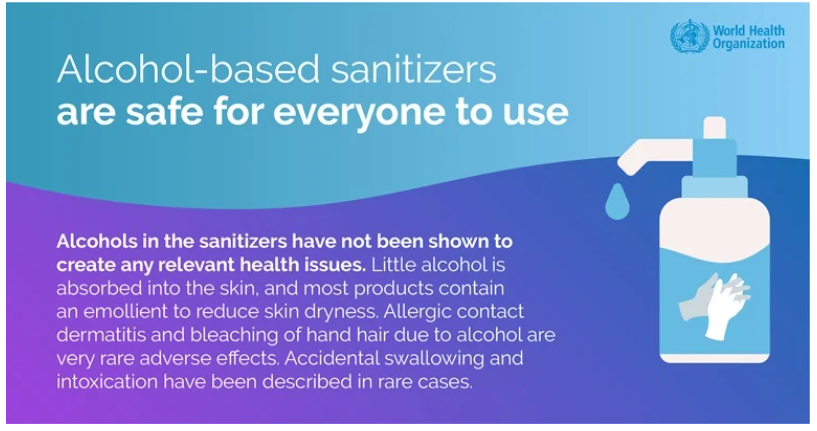
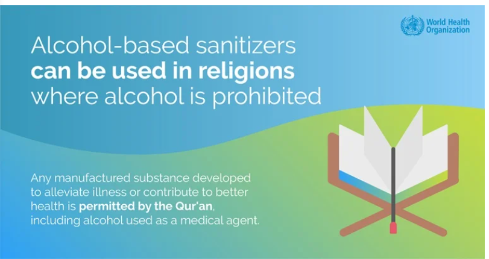

Computer Engineering Role in covid-19 pandemic Main Page
Links:
This is the main page for computer engineering role in covid-19 pandemic ...
The question of how computers can contribute to controlling the COVID-19 pandemic is being posed to experts in artificial intelligence (AI) all over the world.
AI tools can help in many different ways. They are being used to predict the spread of the coronavirus, map its genetic evolution as it transmits from human to human, speed up diagnosis, and in the development of potential treatments, while also helping policymakers cope with related issues, such as the impact on transport, food supplies and travel.
But in all these cases, AI is only effective if it has sufficient examples to learn from. As COVID-19 has taken the world into unchartered territory, the "deep learning" systems, which computers use to acquire new capabilities, don’t necessarily have the data they need to produce useful outputs.

FACT: Alcohol-based sanitizers are safe for everyone to use
Alcohols in the sanitizers have not been shown to create any relevant health issues. Little alcohol is absorbed into the skin, and most products contain an emollient to reduce skin dryness. Allergic contact dermatitis and bleaching of hand hair due to alcohol are very rare adverse effects. Accidental swallowing and intoxication have been described in rare cases.

FACT: Alcohol-based sanitizers can be used in religions where alcohol is prohibited
Any manufactured substance developed to alleviate illness or contribute to better health is permitted by the Qur'an, including alcohol used as a medical agent.
